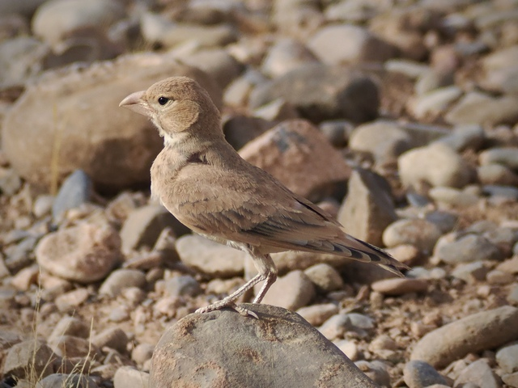
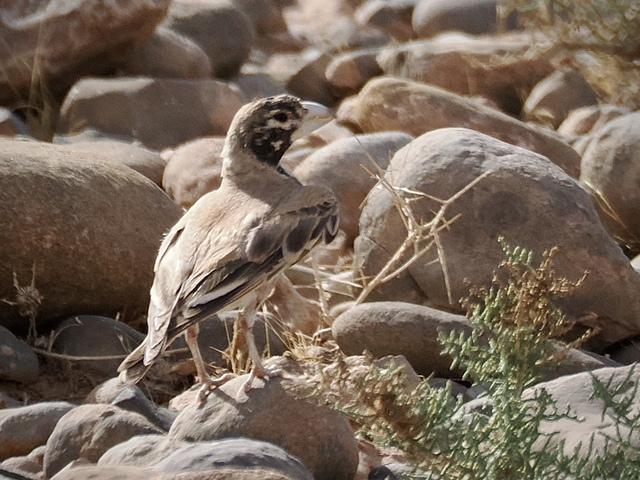
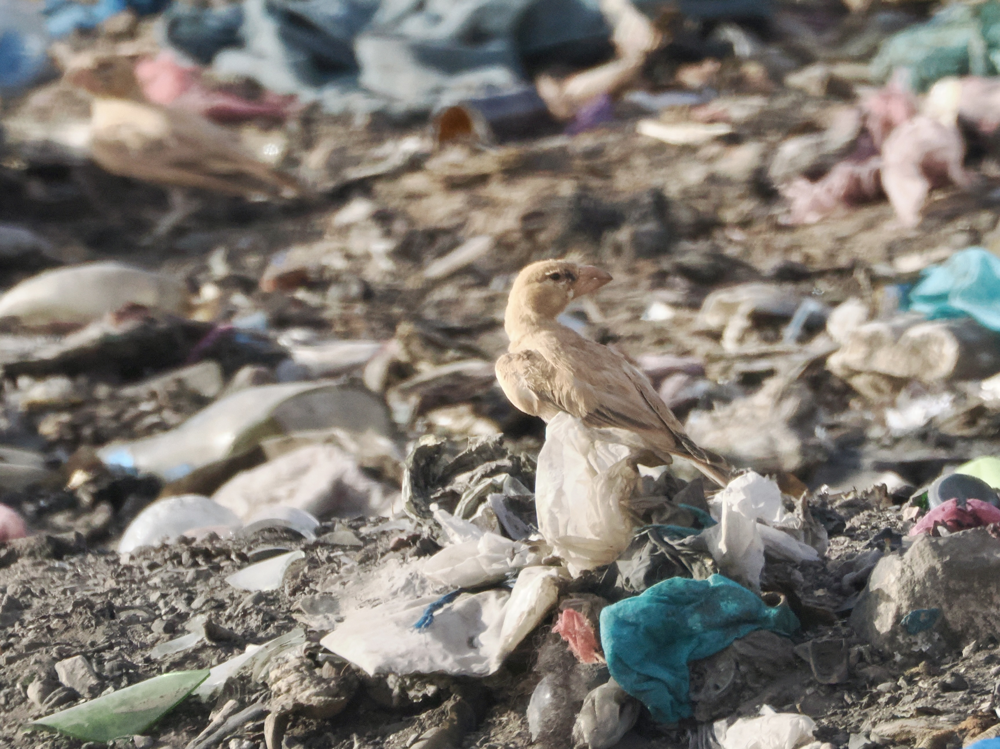

Thick-Billed Lark
Ramphocoris clotbey
Order: Passeriformes
Family: Alaudidae

A brown lark with an unmistakable thick bill. Juvenile is all brown.

Adult is brown with black patterning on the face and wings.

Found in stony desert, foraging on the ground. In Morocco, it is one of the more sought-after targets for birders. We'd like to envision birds in a scenic spot, but ironically, it just happens that one of the best places to see them is this dump in the Tagdilt track, where there are many insects to feed on. I'd perhaps like to stay a bit longer with these birds, but flies kept swarming into the car, and the pungent smell was overwhelming, until one point the concern for my health exceeded any enthusiasm.